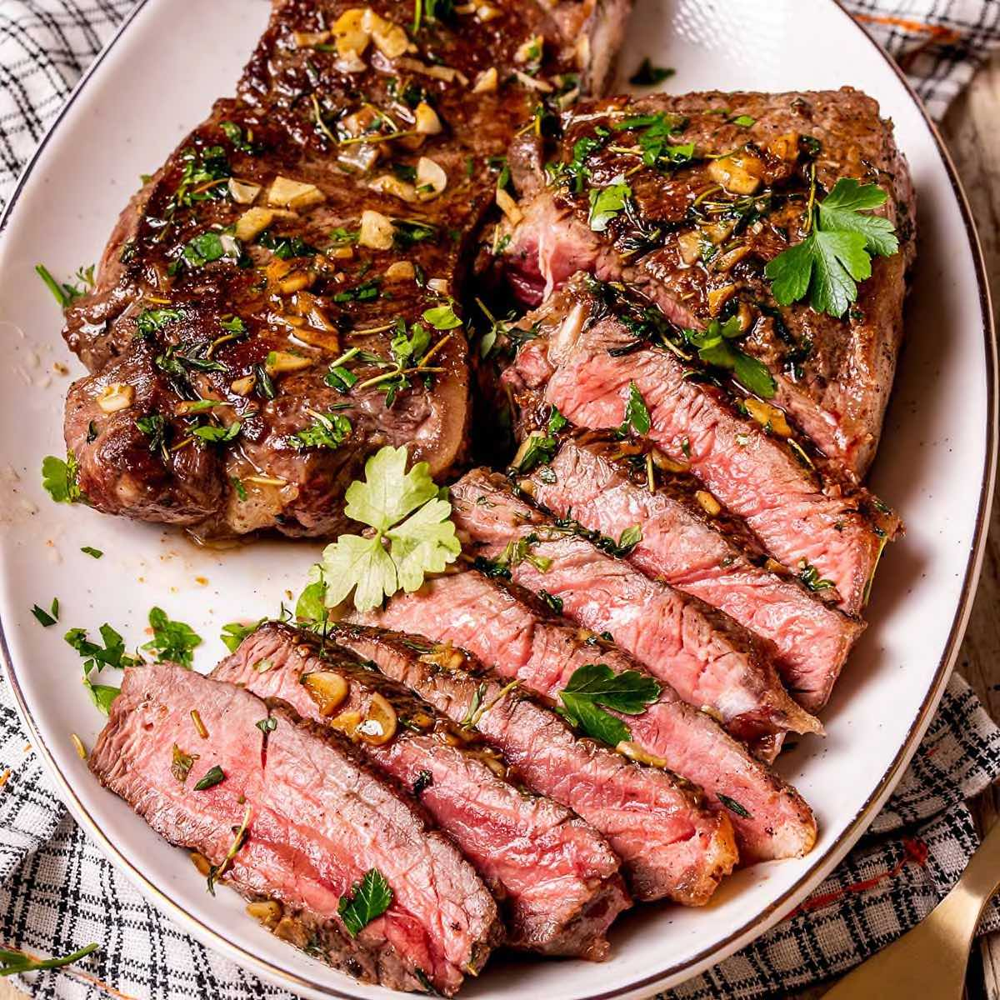

Steak

Steak is Steak!
In the mood to impress at dinner (but strapped for time)? We can all agree—there’s nothing more impressive than a perfectly cooked steak .
They’re kind of the end-all-be-all of romantic date night options, and are pretty perfect for casual weeknight dinners too.
While we do love the ambiance at our local steakhouse, we also like being able to cook up restaurant-level meals at home.
Incredients
- 1/3 c. extra-virgin olive oil
- 1/4 c. reduced-sodium soy sauce
- 2 Tbsp. lime (or lemon) juice
- 2 Tbsp. packed light brown sugar
- 2 lb. flank steak
- Kosher salt
- Freshly ground black pepper
Steps
- In a large bowl, whisk together olive oil, soy sauce, lime juice, and brown sugar. Add steak and toss until coated. Marinate for at least 30 minutes, up to 2 hours.
- Remove steak from marinade and pat dry with paper towels. Season lightly with salt (remember that there's soy sauce in the marinade) and pepper.
- To grill: Preheat grill to medium-high. Place steak on grill and cook to your liking, starting at 5 minutes per side for medium-rare. (Cooking time will vary due to thickness of your steak.) Use a meat thermometer to check the internal temperature—130°F for medium-rare.
- To broil: Preheat oven broiler to high. Place steak on a sheet pan and cook, turning once halfway through, until cooked to your liking, starting at 5 minutes per side for medium-rare. (Cooking time will vary due to thickness of your steak.) Use a meat thermometer to check the internal temperature—130°F for medium-rare. Let rest before slicing and serving.